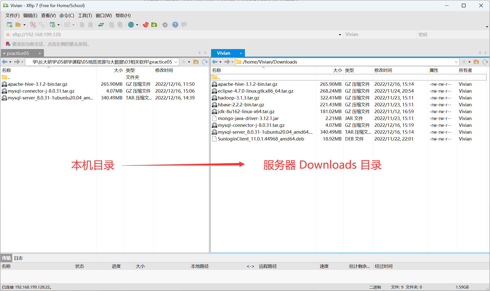
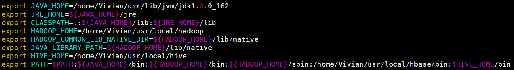
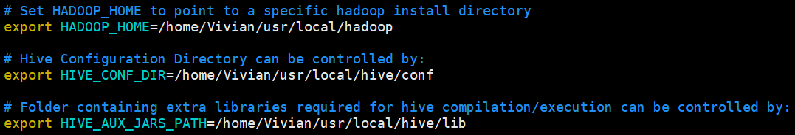
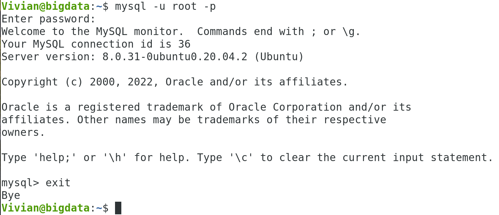
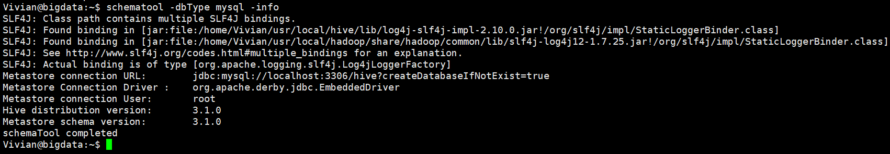
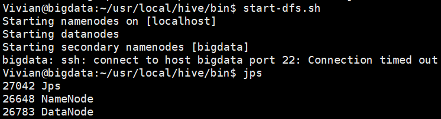
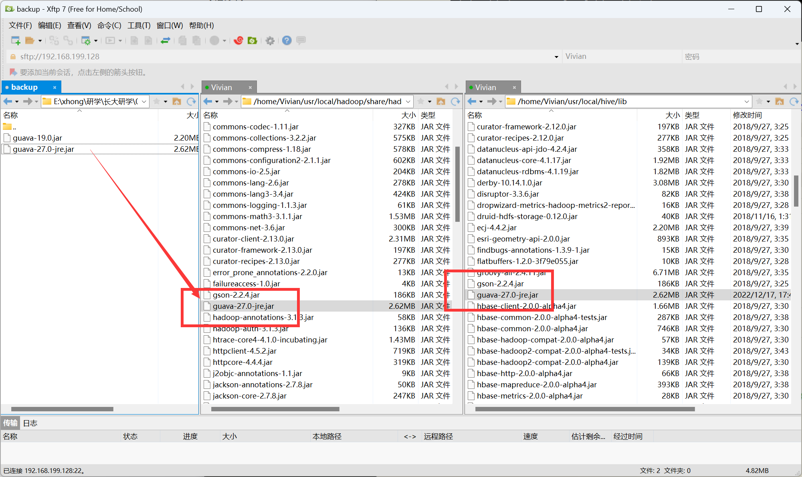

练习五：安装并使用 HIVE
参考资料
- windows下大数据开发环境搭建（5）——Hive环境搭建
- Hive3.1.2安装指南 - 厦门大学林子雨老师
- 实验1 Hive 安装部署 - CSDN
- Ubuntu彻底卸载MySQL - CSDN
- 数据库初始化设置密码时报错"SET PASSWORD has no significance for user 'root'@'localhost' as the authentication met... - CSDN
- Ubuntu20.04上安装MySQL8.0（绝对保证能够正常使用）
一、实验目的
- 安装 HIVE
- 使用 HIVE 进行简单操作
二、实验环境
- 操作系统：
Ubuntu20.04.5
- 开发环境：
JDK1.8 ，Hadoop3.1.3 ，MySQL8.0.31，HIVE3.1.2
三、实验内容和要求
1 下载并上传安装包
1.1 下载 HIVE 安装包
- 下载地址：https://dlcdn.apache.org/hive/hive-3.1.2/

图 1-1 下载 HIVE 3.1.2
1.2 下载 MySQL JDBC 包
- 官网下载地址：https://dev.mysql.com/downloads/connector/j/

图 1-2 下载 MySQL JDBC 包
1.3 上传安装包

图 1-3 上传安装包
2 安装并配置 HIVE
2.1 安装 HIVE
解压到当前用户的 usr/local 中
| tar -zxvf ~/Downloads/apache-hive-3.1.2-bin.tar.gz -C ~/usr/local
|
切换目录
修改文件名
| mv apache-hive-3.1.2-bin hive
|
2.2 配置环境变量
修改环境变量文件
添加 HIVE 安装路径
| export HIVE_HOME=/home/Vivian/usr/local/hive
|
在 Path 中添加
| export PATH=$PATH:$HIVE_HOME/bin
|
在完成上述操作后的环境变量文件至少应包含以下信息：JAVA、Hadoop、HIVE（缺一不可）。

图 2-1 环境变量文件内容
配置生效
2.3 修改 HIVE 配置
切换到 HIVE 配置目录
！！注：接下来的操作都是在此目录下进行的。
重命名文件
| mv hive-default.xml.template hive-default.xml
|
新建 hive-site.xml
1
2
3
4
5
6
7
8
9
10
11
12
13
14
15
16
17
18
19
20
21
22
23
24
25
26
27
28
29
30
31
32
33 | <?xml version="1.0" encoding="UTF-8" standalone="no"?>
<?xml-stylesheet type="text/xsl" href="configuration.xsl"?>
<configuration>
<property>
<name>hive.metastore.schema.verification</name>
<value>false</value>
</property>
<!-- 存储在 HDFS 上的数据路径 -->
<property>
<name>hive.metastore.warehouse.dir</name>
<value>/home/Vivian/usr/local/hive/warehouse</value>
</property>
<property>
<name>hive.exec.scratchdir</name>
<value>/home/Vivian/usr/local/hive/tmp/</value>
</property>
<!-- 本地mysql 配置 -->
<property>
<name>javax.jdo.option.ConnectionURL</name>
<value>jdbc:mysql://localhost:3306/hive?createDatabaseIfNotExist=true</value>
<description>JDBC connect string for a JDBC metastore</description>
</property>
<property>
<name>javax.jdo.option.ConnectionUserName</name>
<value>root</value>
<description>username to use against metastore database</description>
</property>
<property>
<name>javax.jdo.option.ConnectionPassword</name>
<value>123qwe</value>
<description>password to use against metastore database</description>
</property>
</configuration>
|
配置 hive-env.sh 文件
| cp hive-env.sh.template hive-env.sh
|
- 编辑文件
- 输入以下内容后，保存并退出
| # 配置 Hadoop 安装路径
export HADOOP_HOME=/home/Vivian/usr/local/hadoop
# 配置 Hive 配置文件存放路径为 conf
export HIVE_CONF_DIR=/home/Vivian/usr/local/hive/conf
# 配置 Hive 运行资源库路径为 lib
export HIVE_AUX_JARS_PATH=/home/Vivian/usr/local/hive/lib
|
- 修改内容，如图所示

图 2-2 配置 HIVE 环境文件
3 安装并配置 MySQL
3.1 安装 MySQL8.0
更新软件源
修复损坏的软件包
安装 MySQL 最新版
| sudo apt-get install mysql-server
|
以 root 账户运行 mysql
运行命令后，输入设置的密码即可启动 MySQL Shell。

图 3-1 启动 MySQL Shell
3.2 配置 MySQL JDBC 包
接下来，我们要将 mysql-connector-j-8.0.31.jar 拷贝到 ~/usr/local/hive/lib 目录下。
解压包
| tar -zxvf ~/Downloads/mysql-connector-j-8.0.31.tar.gz -C ~/Downloads/
|
切换目录
| cd ~/Downloads/mysql-connector-j-8.0.31/
|
复制 jar 文件
| cp mysql-connector-j-8.0.31.jar ~/usr/local/hive/lib
|
4 首次启动 HIVE
HIVE 是基于 Hadoop 的，所以需要先启动 Hadoop 才能启动 HIVE。
启动 Hadoop 的 HDFS
初始化当前 Hive 版本的 Metastore 架构
| schematool -dbType mysql -initSchema
|
- 此操作将会在 mysql 中创建一个 hive 的数据库。

图 4-1 初始化 HIVE
查看相关信息
| schematool -dbtype mysql -info
|

图 4-2 查看信息
启动 HIVE
退出 HIVE
5 HIVE 的增改查删 CURD 基本操作
经过前面的操作，我们已经配置了 HIVE 的运行环境，并成功启动了一次 HIVE，此时 hive 数据库已经被建立。接下来，我们将在 hive 数据库中进行增改查删一系列的数据库基本操作。
5.1 创建数据表
在 hive 数据库中，创建测绘遥感类 SCI 期刊信息表 journals_info，含四个属性：
-
journal_Name：期刊名称
-
partition：分区级别
-
top：是否顶刊
-
2021_IF：2021年影响因子
创建表并配置存储路径
| create table if not exists journals_info(
journal_name string,
partition int,
top boolean,
2021_IF double
)
location ‘~/usr/local/hive/warehouse/hive/journals_info’;
|
5.2 创建视图
创建视图 little_journals_info，其中只包含 journals_info 表中 journal_name，partition 属性。
| create view little_journals_info as select journal_name,partition from journals_info;
|
5.3 查看数据库、表与视图
查看 HIVE 中所有的数据库
查看 hive 数据库中所有表
四、问题与解决方案
1 问题一
1.1 问题描述
MySQL 数据库在进行初始化时，设置密码报错：
| Re-enter new password:
... Failed! Error: SET PASSWORD has no significance for user 'root'@'localhost' as the authentication method used doesn't store authentication data in the MySQL server. Please consider using ALTER USER instead if you want to change authentication parameters.
|
1.2 解决方案
2 问题二
2.1 问题描述
在启动 Hadoop 时，出现以下错误，程序无法正常启动。
| bigdata: ssh: connect to host bigdata port 22: Connection timed out
|

问题一截图
2.2 解决方案
查看当前 IP 地址
检查 hosts 文件配置
如果发现 IP 地址不一致，修改为当前地址保存并退出即可。
3 问题三
3.1 问题描述
在初始化 HIVE 时，遇到如下错误导致无法启动：
| Exception in thread "main" java.lang.NoSuchMethodError: com.google.common.base.Preconditions.checkArgument
|
3.2 解决方案
- 查看
hadoop 安装目录下 share/hadoop/common/lib 内 guava.jar版本
- 查看
hive 安装目录下 lib 内 guava.jar 的版本，如果两者不一致，删除版本低的，并拷贝高版本的即可解决问题
- 使用 Xftp 将两个目录下的
guava.jar 包改为同一个版本。

问题三解决
最后更新:
2023-03-08
创建日期:
2022-12-27
作者:
gis-xh
{kind=link}
{kind=link}
{kind=link}
{kind=link}
{kind=link}
{kind=link}
{kind=link}